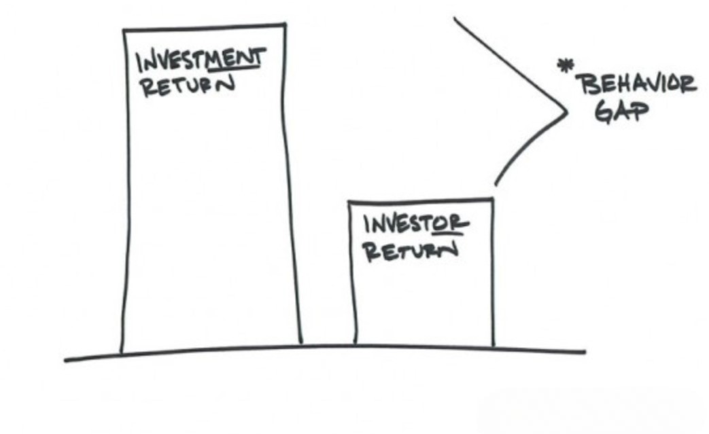
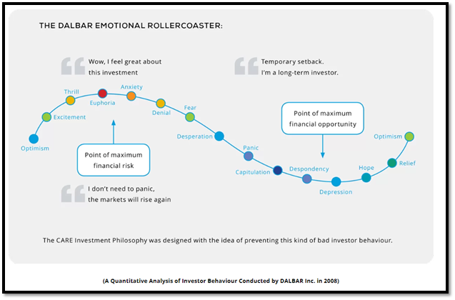

Financial Behavior Gap
In my over two decades of experience in the investment
business,
I have learned that many investors fail to match the
returns of
even the Sensex or Nifty. Choosing a suitable investment
scheme
is one of the first steps in a financial journey, but
how one
behaves during that period is what makes an investor
successful.
It seems simple, but it’s not easy to follow. Just like
we all
know that a morning walk is good for health, yet it’s
hard to do
it consistently.
Many studies have been conducted to understand the gap
in
investors' returns due to their behavior. We not only
guide our
clients through investment options but also help them
stay
disciplined and avoid such mistakes.
Among various studies done on financial behavior, the
DALBAR
study is underexplained for further understanding.

